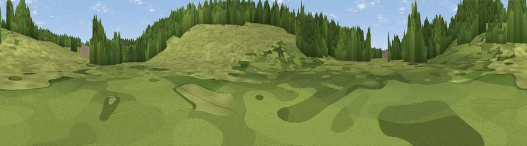

Viewpoint near Chenies
#45971 in England · top 96% of its area beats it · near CheniesThe view, rendered

A 360° render of this exact spot computed from the terrain model, tree cover and land cover — summer colours, afternoon light, calibrated against photographs of famous viewpoints. Real trees, hedges and buildings will differ in detail.
The panorama
Grey silhouette: terrain skyline in each direction (720 bearings, Earth curvature and refraction included). Dashed green: skyline with trees (+15 m) and buildings (+8 m) as obstacles. Blue strip: how far the ground is visible on each bearing.
Where the view opens
Wedge length = distance to the farthest visible ground on that bearing (vegetation-aware). Rings at 10, 25 and 50 km.
What fills the view
62% grassland · 37% woodland · 1% cropland
Angular shares of the visible panorama (visual magnitude), not map area. Landscape diversity 0.31 (0–1 Shannon).
Key numbers
More beautiful places nearby
The staircase of upgrades: each row has a higher view potential than everything closer. Driving times are estimates from straight-line distance, calibrated against real road routing — check an actual route before setting out.
| Place | Direction | Drive | Score |
|---|---|---|---|
| Viewpoint near Chenies | SE · 0 km | ~2 min | 18.4 |
| Viewpoint near Sarratt | ESE · 1 km | ~4 min | 24.6 |
| Viewpoint near Chesham Bois | W · 6 km | ~12 min | 25.0 |
| Viewpoint near Hill End | SSE · 6 km | ~13 min | 29.1 |
| Viewpoint near Coleshill | WSW · 8 km | ~16 min | 40.0 |
| Viewpoint near South Oxhey | SE · 11 km | ~21 min | 40.5 |
| Viewpoint near South Harefield | SSE · 12 km | ~23 min | 43.7 |
| Viewpoint near Loudwater | WSW · 14 km | ~25 min | 47.5 |
51.67973, -0.52203 · source: osm viewpoint · position refined by local search. Computed location — check access rights before visiting.